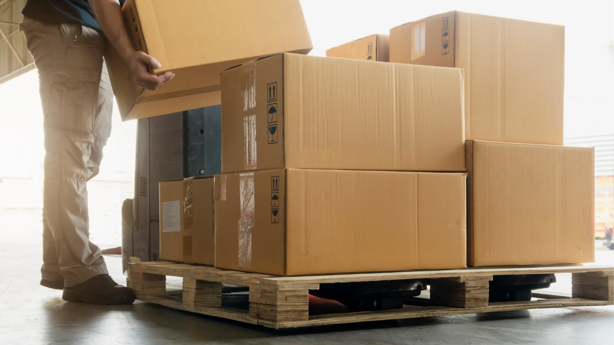

DELIVER
We expertly handle all paperwork and logistics, to ensure your shipments arrive safely and on time, anywhere in the world.
Leveraging our deep supply chain expertise and an expansive network of freight carriers, we deliver a seamless, worry-free ordering experience. We work closely with your needs and schedule manufacturing deliverables to guarantee the success of your projects — because your success is our mission!
SAME & NEXT DAY DELIVERIES
With same-day shipping for the Edmonton area and next-day delivery throughout Alberta, we make sure your products are on their way the moment they're ready. Timely deliveries are key to project success, and we're committed to ensuring your shipments arrive exactly when needed.

LOGISTICS AND PAPERWORK
Let us handle the complexities of customs and commercial invoices for you. Our specialized expertise in supply chain management means we personally ensure your products are processed quickly and without hassle, giving you a smoother, worry-free experience.
HASSLE-FREE SHIPPING
We're committed to protecting your products and the planet, using premium recycled and recyclable materials for safe and discreet packaging. Whether you need products individually wrapped, shipped directly to your end customers, coordinate pickups with third-party freight, or any special packaging directions, we've got you covered.
STOCK AND DRAW SYSTEM
We can make and store your products right in our warehouse, so you're always stocked up and ready to go. Plus, we can stick to your delivery schedules to keep your production lines moving smoothly. This strategy is about more than just logistics; it's about supporting the uninterrupted success of your operations.